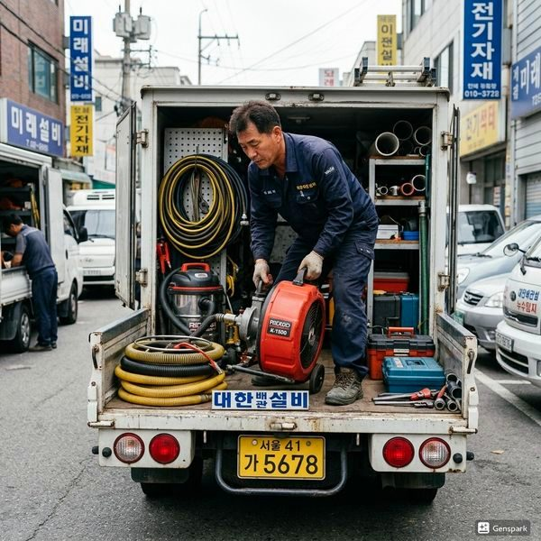

배관에서 소리나는 원인 5가지와 해결법
2026년 4월 12일 | 제우스시설관리
밤에 조용한 집에서 배관에서 쿵쿵, 끼이익, 꾸르르 소리가 나면 불안해집니다. 배관 소리는 단순한 불편함을 넘어 배관 시스템의 이상을 알리는 경고 신호일 수 있습니다. 소리의 종류별로 원인과 해결법이 다릅니다.
첫째, 쿵쿵(워터 해머) 소리. 수도꼭지를 갑자기 잠글 때 배관 내 수압이 급변하며 발생합니다. 세탁기나 식기세척기가 밸브를 순간적으로 닫을 때도 같은 현상이 일어납니다. 방치하면 배관 연결부가 느슨해지고 누수로 이어집니다. 워터 해머 어레스터 설치로 해결합니다.
둘째, 끼이익(고음) 소리. 수도꼭지를 열 때 나는 고음은 밸브 내부 패킹의 마모가 원인입니다. 밸브를 교체하면 해결됩니다. 셋째, 꾸르르 소리. 배수관에서 나는 이 소리는 배관 내부에 부분 막힘이 있다는 신호입니다. 물이 좁아진 배관을 통과하면서 공기와 함께 소리가 납니다.

넷째, 딸깍딸깍 소리. 온수 배관이 열팽창하면서 벽이나 바닥재에 부딪혀 나는 소리입니다. 배관 고정 클립을 조절하면 해결됩니다. 다섯째, 쉬이(공기음). 배관에 공기가 차면 수도꼭지에서 물과 공기가 번갈아 나오며 소리가 납니다.
제우스시설관리는 관로탐지기와 내시경 카메라로 소리의 정확한 원인을 찾아냅니다. 배관 소리를 방치하면 누수나 파열로 이어질 수 있습니다. 28분 내 출동, 전화: 010-4406-1788